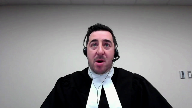
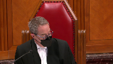
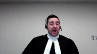
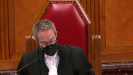
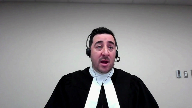
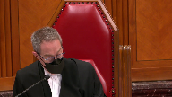
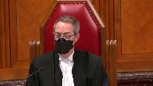
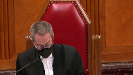
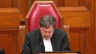

Her Majesty the Queen v. Daniel Brunelle
This transcript was made with automated artificial intelligence models and its accuracy has not been verified. Review the original webcast here.
Justice Wagner (00:00:26): Bonjour.
Overlapping speakers (00:00:26): Jesus.
Justice Wagner (00:00:26): Bonsoir.
Dans la cause, Sa Majesté la Reine contre Daniel Brunel.
Pour la plante, Sa Majesté la Reine, maître Nicolas Abrand, maître Alexandre Dubois.
Pour l’intimé, Daniel Brunel, maître Marie-Hélène Giroux, maître Abrand ou maître Dubois.
Speaker 1 (00:00:51): Monsieur le juge en chef, mesdames et messieurs les juges, bonjour.

Aujourd’hui, la planche Sainte-Rosse a plaidoiré en deux.
Je ferai d’entrée de jeu la démonstration que les juges majoritaires ont écarté sans droit les conclusions portant sur la crédibilité et deuxièmement, réviser les faits à l’encontre de la norme d’intervention applicable.
Mon collègue Maître Dubois démontrera par la suite que le verdict n’était pas déraisonnable.
Suivant un banal accrochage le 22 juillet 2016, l’intimé se fait insulter par le pléniant.
Se sentant non respecté, choqué, piqué au vif, il s’arme d’un couteau, le dissimule dans sa main et va à l’encontre du pléniant.
Suivant un échange verbal acrimonieux, le pléniant assène un coup de poing qui ne fait pas mal à l’intimé.
Ce dernier riposte en le poignardant à cinq reprises causant d’importantes blessures qui nécessiteront six semaines d’hospitalisation et de nombreuses chirurgies.
Étonnamment, pour les juges majoritaires, le scénario est tout autre.
C’est plutôt un homme calme, vulnérable et terrifié qu’une fête se défende après s’être fait attaquer subitement par deux assaillants.
Ces versions antinomiques sont au cœur du présent pourvoir.
Pourtant, elle ne devrait pas l’être, l’intimé n’ayant pas été cru par la première juge sur son intention défensive en raison de son absence de crédibilité.
Maitre Abraham, qu’est-ce qu’on fait avec le témoignage de Mme Couture?
Qu’est-ce qu’on fait avec le témoignage de Mme Couture?
Justice Côté (00:02:19): qui confirme que quand l’accusé est sorti de son véhicule, il était relativement calme et c’était plutôt le plaignant qui était agité.
Speaker 1 (00:02:29): En fait, Mme Couture, ce qu’elle nous dit, c’est que le conducteur du VES, donc l’intimé, est un petit peu… en fait que le conducteur du pick-up, qui a une remorque, est un petit peu plus « prime », donc le plaignant est un peu plus choqué que l’autre.
Et ça, c’est le témoignage d’une personne.
Il faut savoir que les témoignages du plaignant et de son fils n’ont pas été écartés.
Autant le fils que le père mentionnent que l’intimé est en colère, qu’il est agressif, et le fils dit «
il n’est pas calme ». Non.
Je peux vous référer à la preuve, si vous le désirez, Mme la juge Côté.
Justice Kasirer (00:03:11): de ma collègue.

Justement, Mme Couture témoigne aussi quant à la rapidité de l’événement.
À la page 105 du volume 4, elle dit explicitement en réponse à votre question, enfin la question du ministère public, je pense, est-ce que vous êtes en mesure d’estimer combien de temps ça dure cet événement-là, c’était pas vraiment long.
Et si on regarde le désaccord en cours d’appel, c’est là où la juge Bélanger, au paragraphe 40, enfin 38, 39 à 40, elle met le doigt sur ce point-là.
Alors qu’avez-vous à dire juste pour faire suite à ce n’est pas possible de faire suite à la commentaire de ma collègue?
Speaker 1 (00:04:10): Oui, en fait, Madame Couture témoigne à l’effet que l’événement dure en tout et pour tout un peu moins de deux minutes.
Nous, notre prétention, c’est que ce n’est pas parce qu’il y a un événement qui se produit rapidement, et rapidement, c’est une question de perception, que la législative de défense s’appliquera automatiquement.
Mon collègue
Matt Dubois va y revenir tantôt.
Mais au niveau des faits, ce qu’il faut savoir, c’est qu’on considère, et là-dessus, on se base sur la réquille.
On sait que la réquille que vous avez rendue, le rôle de la personne impliquée dans l’incident, c’est à 34-2 du code criminel.
Mais pour nous, c’est l’ensemble de l’événement qui compte.
Donc, de l’accrochage où l’intimé se dit insulté par le comportement des plaignants alors qu’ils sont en voiture.
Ensuite, il mentionne qu’il a peur qu’il s’arrête au feu rouge pour le battre.
Il arrive dans le stationnement.
Sa réaction, ce n’est pas d’appeler la police, c’est de laisser son cellulaire dans l’auto, de prendre son couteau, de le mettre dans sa main et de se diriger vers le plaignant qui l’insulte.
Pour le ministère public, pour la Plante, cet ensemble de faits justifiait les conclusions de la juge de première instance à l’effet que monsieur était agressif et que le coup de poing reçut lors de l’échange verbal.
Il ne faut pas oublier que l’intimé admet monter le ton, qu’il sacre à deux reprises après le plaignant et que lorsqu’il reçoit le coup de poing, qui ne lui fait pas mal, il le poignarde.
Oui, c’est aller vite à partir du moment où il a reçu le coup de poing, mais quand on reçoit un coup de poing, nécessairement ça va vite.
Et pour nous, on ne peut pas croire que la juge de première instance n’a pas eu conscience ou n’a pas considéré la rapidité de l’altercation.
Ça lui a été plaidé par les deux parties et chaque témoin en a parlé.
Justice Côté (00:06:09): elle n’en parle pas dans sa décision à la première juge.
Cette question de rapidité et comment la rapidité ou le laps de temps entre l’attaque et la riposte, quelle importance ça a avant de déterminer si la personne a agi dans l’intention de se défendre ou dans l’intention de se venger.
Speaker 1 (00:06:30): Alors, elle ne parle pas de la rapidité de la riposte, je suis d’accord par contre sur la rapidité de l’altercation dans son tout, elle donne foi au témoignage de Stéphanie Couture à la page 7 de son jugement et elle mentionne à ce moment-là que ça dure au total moins de deux minutes et à ce moment-là elle a à l’esprit la rapidité de la réaction et je comprends que M. Brunel réagit rapidement avec les coups de couteau qu’il donne, mais sa version, elle n’est pas crédible et c’est pour ça que la juge peut prendre en considération, bon premièrement, qu’il n’est pas crédible et à ce moment-là, les coups de couteau qu’il va donner et la rapidité de l’altercation sont des facteurs de l’analyse qui, de notre avis, n’étaient pas nature à écarter les conclusions de la première juge sur la version non crue et ça ne permettait pas à la Cour d’appel, à notre avis dans les paragraphes 43 à 46, de revoir entièrement les faits.

Le plaignant.
Justice Kasirer (00:07:48): Juste pour faire la lecture comparée des juges majoritaires et dissidents sur le point que vous relevez, dois-je comprendre des motifs du juge Bachan à 66 quand il dit, parlant de la rapidité, quand il dit que les éléments du dossier ne permettent pas de conclure que la juge a omis de prendre en considération le fait que l’altercation s’est déroulée très rapidement et il nous renvoie à Hausson, c’est-à-dire il semble dire qu’on n’a pas démontré une erreur révisable sur ce point-là et on tient pour acquis que la juge a tenu compte de ce facteur-là.

Ça c’est votre position.
Speaker 1 (00:08:42): Oui en fait, c’est notre position parce que ça lui a été plaidé.

Il faut se rappeler que c’est des motifs oraux qui doivent être compris dans la présomption que les juges appliquent correctement le droit et connaissent les faits à moins qu’on démontre une erreur qui est manifeste et déterminante.
La juge réfère à l’ensemble de la preuve dans sa décision et selon nous, celle-ci était claire.
Personne ne remettait en cause la rapidité de l’altercation.
Elle l’a donc pris en cause.
C’est juste que comme elle n’a pas cru M. Brunel et selon nous, il n’y a pas d’erreur à cet égard-là.
Elle a donné foi au témoignage du plaignant et de son fils, sauf pour l’aspect de la poussée versus le coup de poing.
Elle arrive à la conclusion que M. L’intimé avance armé, choqué dans l’espoir ou dans l’esprit de se venger.
Selon nous, le coup de poing, c’est l’élément déclencheur, mais l’intention de violence était déjà là.
C’est, selon nous, traduit par les verbalisations qu’il dit. Il dit «
je suis choqué, je suis piqué au cœur.
» Il dit même « je me sens comme un tas de marde.
» Pardonnez-moi l’expression, c’est ses mots à lui.
À ce moment-là, dans ce contexte-là, oui, le coup de poing est rapide.
Un coup de poing sera toujours rapide et la riposte, elle vient rapidement.
Il dit quand même dans son interrogatoire vidéo qu’il reçoit le coup de poing, qu’il n’a pas mal, qu’il est un peu sonné, qu’il se replace, qu’il avance d’un pas et qu’il donne un premier coup.
Je comprends qu’au procès, il dit autre chose.
Il dit « le plaignant a foncé à cinq reprises sur le couteau.
» Alors que c’est incompatible avec la preuve médicale, le plaignant a deux coups de couteau dans le dos.
Ceci étant dit, c’est dans ce contexte-là qu’on considère que la juge a pris en compte le fait qu’il a fait un coup de poing, qu’il a fait un coup de poing, qu’il a fait un coup de poing.
C’est-à-dire qu’il a fait un coup de poing, qu’il a fait un coup de poing, qu’il a fait un coup de poing.
C’est-à-dire qu’il a fait un coup de poing, qu’il a fait un coup de poing, qu’il a fait un coup de poing, qu’il a fait un coup de poing.
Justice Wagner (00:11:21): Merci beaucoup.
Speaker 2 (00:11:29): Oui, donc, merci beaucoup, monsieur le juge en chef.
Bonjour, mesdames les juges, messieurs les juges.
Effectivement, je vais renchérir sur les propos de mon collègue Maitabran relativement à la rapidité de l’altercaation, mais je diviserai également ma plaidoirie sous trois angles.
Le premier étant la proportionnalité de la riposte et sa considération dans le cadre du deuxième critère.
Dans un deuxième temps, la rapidité de l’altercaation et le parallèle dressé par les juges majoritaires avec la retrainte de votre cours.
Et en dernier lieu, sur la vraisemblance du moyen de défense et son impact avec la considération du verdict déraisonnable.
Vous avez posé la question à mon collègue quant à la rapidité de l’altercaation, comment on devait le considérer.
Il y a un élément qu’il faut ajouter ici et que les signes d’agressivité, si on reprend pour acquis le témoignage de l’intimé, sont démontrés dès le départ sur l’autoroute.
Et peu de temps après, lorsque les véhicules vont s’immobiliser à une lumière rouge, déjà l’intimé va verbaliser une crainte à l’effet que le plaignant puisse sortir de son véhicule et commencer à s’en prendre à lui.
Donc, à ce moment-là, de cette perspective, l’altercaation, elle est déjà débutée et on peut allonger à ce moment-là la temporalité qui a été retenue par la juge pour justement inférer l’état d’esprit de l’intimé par après.
Évidemment, il y a immobilisation du véhicule dans le stationnement.
L’intimé va laisser son cellulaire dans le véhicule.
Si, encore une fois, on retient son témoignage, il est toujours équipé de son couteau qui est à sa ceinture.
Mais c’est quand même particulier en ce sens
que le couteau ne restera pas à la ceinture de l’intimé, il va carrément le prendre dans sa main.
Et ça, c’est central dans les motifs de la juge à l’effet qu’elle va définir environ quatre questions, justement pour inférer la colère, l’agressivité de l’intimé et ce qui l’amène ultimement à retenir une dynamique de donnant-donnant.
En l’espèce, et je me permets de faire un point là-dessus, il faut faire attention dans l’opposition entre intention défensive versus intention vengeriste.
Il y a, selon nous, une autre inférence qui pourrait être tirée de la preuve qui est celle de l’action qui serait issue de la provocation.
Et qu’à ce moment-là, l’intimé aurait réagi sous l’impulsion du moment en perdant son sang-froid, ce qui ne serait évidemment pas excusé en vertu de 34.
Parce qu’en l’espèce, les juges majoritaires de la Cour d’appel parlent beaucoup de la rapidité de l’altercation.
Je me mets à passer en question, évidemment, plus le temps est long en justement la menace qui est subie, l’attaque et versus la riposte, si l’altercation est évidemment terminée et que l’intimé s’en serait pris au plaignant, la conclusion serait assez facile à y avoir au point de vue de la vengeance.
Mais la plupart des cas de légitime défense sont invoqués, sont impliqués dans des contextes impulsifs, des contextes rapides.
La rapidité n’entraîne pas de facto l’intention défensée.
Et donc, il fallait vraiment que la juge puisse faire une distinction.
Ce n’était pas simplement l’altercation est rapide, l’intimé a juste une impulsion du moment, mais est-ce qu’il agit par suite de provocation?
Et dans la mesure où elle retient qu’il est piqué au coeur, choqué par les propos verbaux du plaignant et de son fils, par ailleurs, on comprend de la preuve que les propos du fils, notamment l’emploi du juron, viennent particulièrement le chercher, qu’il a le couteau en main déjà, qu’il est dans une arme létale et on peut inférer l’intention offensée de ça.
À partir de ce moment-là, il y avait une distinction à faire.
Justice Kasirer (00:15:11): de l’extinction de la preuve.

Maître, vous évoquez l’intention, qu’avez-vous à dire sur les commentaires des juges majoritaires quant à la supposée erreur de la juge quant à son, je suis au paragraphe 51, quand les juges majoritaires disent «
Il est donc surprenant de constater que la juge reproche à l’appelant d’avoir eu l’intention de blesser le plaignant, car cette intention participe forcément à la légitime défense ».
Autrement dit, l’intention en tant que telle n’est pas le critère qui nous aide à comprendre cela, c’est plutôt le mobile, on cite l’affaire Cair et le professeur Don Stewart.
Qu’avez-vous à dire quant à cette critique-là?
Speaker 2 (00:16:05): Je suis effectivement 100 % d’accord.
Il ne faut pas confondre intention versus motivation.
Effectivement, le vocable mobile est peut-être plus représentatif.
Ici, je référais davantage à l’intention défensée, mais ce que j’ai à répondre spécifiquement à ça, c’est que dans la mesure où la juge retient une intention de donnant-donnant, il faut interpréter les propos de la juge de l’intention de blesser comme une compensation du mal subi.
Tu m’attaques, je t’attaque.
Tu me fais mal, je te fais mal.
Donc, on est dans un motif de compensation.
C’est dans ce sens-là que je ne crois pas que l’erreur qui est soumise par la majorité de la Cour d’appel est alors commise parce qu’elle est intrinsèquement liée à l’interprétation des verbalisations de l’intimé.
À ce moment-là, cette interprétation, contrairement à ce que soumettent les juges majoritaires et avec tous les égards que je leur dois, ne s’inscrit pas dans le contexte du moyen de défense, qui est celle de la défense nécessaire.
On s’entend ici, on parle d’un coup de poing qui ne fait pas mal à l’intimé et on répond à ça avec cinq coups de couteau.
Il y a deux inférences qu’on pouvait tirer de cela et d’ailleurs, le juge dissident en fait mention.
La première étant moins un coup de poing nous fait mal, moins une attaque nous fait mal, moins on ressent la nécessité de se défendre et la nette disproportion, donc l’emploi de cinq coups de couteau, nous permet d’inférer l’acharnement, d’inférer à ce moment-là la colère qui animait les…
Justice Côté (00:17:34): pour vous le nombre de coups de couteau c’est ça qui permet de conclure que l’intimé avait l’intention que monsieur avait l’intention de se venger si ça avait été un coup de couteau qu’est ce qu’on était dans un autre dossier
Speaker 2 (00:17:50): Je pense sincèrement qu’on était dans un autre dossier parce que la rapidité, la mouvance, selon moi, on ne peut pas se séparer non plus.
À partir du moment que l’arme offensive est utilisée, on découle en cascade, on utilise cinq coups de couteau.
Je pense que si on avait eu un coup de couteau, ça aurait été un tout autre dossier.
Mais vous savez, c’est l’ensemble de la preuve en l’espèce, la prise en main du couteau, le fait que l’altercation était déjà débutée à la lumière rouge, les propos qui sont employés, le fait que…
Justice Côté (00:18:22): Mais le fait qu’il a pris son couteau ça peut simplement démontrer aussi une intention de se défendre.
Le fait qu’il a sorti son couteau n’est pas nécessairement équivalent à intention de vengeance.
Quand vous parlez du nombre de coups de couteau, c’est plus au niveau du troisième facteur, de la proportionnalité.
Mais au niveau de l’intention elle-même, est-ce qu’il vous laisse défendre ou est-ce qu’il vous laisse venger?
Le fait de sortir un couteau, quand on voit deux personnes qui s’avancent vers nous, qui crient, qui ont l’air choquées, ça peut aussi simplement démontrer une intention de se défendre si besoin est.
Speaker 2 (00:19:00): Avec Égard, considérant le contexte, considérant les verbalisations mènes de la planche, je ne crois pas qu’on était simplement dans un contexte défensif.
Effectivement, vous avez raison.
Comme dans l’arrêt, dans l’arrêt Caire, la prise en main d’un couteau n’avait pas été, n’avait pas été associé à un mobile de vengeance.
Même, c’était davantage associé à l’intention dangereuse.
Mais ici, manifestement, la juge, en posant les quatre questions qu’elle éliminait dans son jugement, rejette cette rétention-là défensive de la planche.
Surtout que lorsqu’il s’exprime à la page 109, 110 du volume 6, c’est dans son contre-interrogatoire sur la raison pourquoi il aurait pris son couteau.
Il affirme, c’était préférable d’être armé que de ne pas être armé.
Il dit jamais je voulais l’utiliser à ce moment-là pour me défendre.
Il est déjà à la ceinture, le couteau.
Il est déjà équipé d’une arme.
Il n’avait pas besoin de le prendre dans sa main, de le cacher et justement d’aller au-devant du danger en sortant de son véhicule, en gardant son cellulaire dans son véhicule.
Et donc, à ce moment-là, est-ce que c’était la seule conclusion que la juge…
Du moins, l’ensemble de ces éléments-là donnaient un fondement articulable, un fondement raisonnable à la conclusion de la juge.
À ce moment-là, nous sommes d’avis qu’il n’y avait pas erreur, manifeste et déterminante qui permettaient l’intervention de la majorité de la Cour d’appel.
Et à ce moment-là, nous adoptons évidemment la position dissidente du juge Bachin.
Je ne sais pas si ça répondait adéquatement à votre question, Mme la juge Vautier.
Inaudible.
Speaker 2 (00:20:37): Et donc, cette dynamique-là de donnant-donnant, selon nous, qui est reflétée par les paroles qui sont retenues par la première juge, et ces paroles-là, ultimement, on comprend que l’analyse de la crédibilité dans le jugement, elle est centrale d’abord pour deux motifs.
On comprend que la juge de première instance écarte le témoignage de M. Brunel puisqu’il livre des versions contradictoires, deuxièmement parce qu’il adapte sa version au fil et à mesure que les questions lui sont posées.
Et cet élément-là permettait, à ce moment-là, de venir tempérer les propos de M. Brunel lorsqu’il venait indiquer à la Cour qu’il avait l’intention de se défendre.
On comprend que la juge, elle retient qu’il n’a pas témoigné de façon sincère.
Et ces deux conclusions-là quant à la crédibilité ne sont pas attaquées par les juges majoritaires alors que c’était central au jugement.
Et donc, à ce moment-là, nous sommes d’avis qu’il n’y avait pas d’intervention.
Et d’autant plus que, puisqu’on retenait du côté de la première juge les verbalisations, selon nous, la législation de défense au Canada, qui est la codification de la défense nécessaire, n’a jamais excusé des gestes dans une dynamique de donnant-donnant.
Et donc, je n’ai pas tendu l’autre joue, je ne me suis pas laissé faire.
Il fallait avoir une nécessité, un instinct de préservation de la personne qui s’articulait, alors que clairement, l’ensemble du contexte démontrait que M. Brunel était fâché, selon nous.
Ce qui m’amènerait bien humblement à mon troisième point, qui est le test de la vraisemblance.
En l’espèce, à chacune des étapes de son analyse, la juge va prendre des trois critères de la légitime défense et statuer si oui ou non, la vraisemblance est acquise relativement à chacun des critères.
Évidemment, elle le mentionne spécifiquement, elle n’avait pas à faire l’analyse de la crédibilité à ce stade et rien ne démontre dans ses motifs qu’elle aurait erré en droit à cet égard-là.
Premier critère, non seulement elle statue que la vraisemblance est acquise, deuxièmement elle statue que le ministère public ne s’est pas déchargé de son fardeau.
Sur le deuxième critère, et c’est là que ça devient important, c’est qu’elle statue que la vraisemblance est acquise.
Et donc, le deuxième critère étant l’intention défensive, elle considère que la preuve sur son meilleur jour démontrait l’intention défensive de M. Brunel.
Donc, partant de cela, lorsqu’elle arrive sur le troisième critère, je vous suggère que lorsqu’on prend l’ensemble de ses motifs, elle a nécessairement tenu pour acquis l’intention défensive de M. Brunel, puisque c’était ce que la preuve sur son meilleur jour démontrait.
Et donc, lorsqu’on regarde l’ensemble de ses motifs, je vous le concède, c’est sûr que c’est davantage la conclusion subsidiaire qui est écrite, mais on comprend d’une analyse téléologique de ses motifs que la proportionnalité occupait une place centrale dans son jugement, et c’est ce qui fait en sorte qu’elle arrive à trancher que le troisième critère, la vraisemblance, n’est pas acquise.
Et donc, à ce moment-là, je vous soumets humblement qu’il fallait réconcilier l’erreur sur l’intention défensive qui est allégée par la majorité de la Cour d’appel et déterminer en quoi elle avait un impact avec le verdict qui était rendu et non simplement la question subsidiaire, la conclusion subsidiaire de la première juge.
Et considérant sa conclusion sur le test de la vraisemblance à la deuxième étape, pour nous, à ce moment-là, le jugement démontre clairement que cette conclusion-là, ou du moins l’erreur identifiée par la majorité si jamais elle était commise, n’a pas pu avoir d’impact.
Et à ce moment-là, l’appel aurait dû être rejeté.
Je ne vais pas s’accomplir de vos arguments, maître.
Je s’accomplis de mes arguments, monsieur le juge.
Justice Wagner (00:24:26): question simplement additionnelle dans vos remarques.
Premièrement, est-ce que l’accusé d’intimidation a été, je pense, a été sentencé?
Overlapping speakers (00:24:36): Oui, il a effectivement été sentencié à une période d’incarcération de trois ans.
Justice Wagner (00:24:40): Et vous demandez dans vos conclusions qu’il se présente dans l’éventualité où l’appel soit accueilli, qu’il se présente aux autorités dans un délai de 72 heures, c’est exact?
Effectivement.
Est-ce que je peux vous demander pourquoi 72 heures?
Speaker 2 (00:24:56): Tout simplement, en fait c’est simplement pour lui laisser le temps si jamais la cour rendait un arrêt, mais il n’y avait pas de…
Overlapping speakers (00:25:05): Est-ce que c’est le temps habituellement que la couronne demande en semblable matière, à votre connaissance?
Speaker 2 (00:25:11): À notre connaissance,
du moins dans notre district judiciaire où je pratique, c’est toujours 72 heures, mais il est parfois 48 heures.
Overlapping speakers (00:25:18): Donc, il n’y avait pas de raison particulière pourquoi le délai était plus long. Merci.
Merci à vous.
Inaudible.
Justice Wagner (00:25:32): Maître Giroux.
Speaker 3 (00:25:34): Monsieur le juge en chef, bonjour messieurs les juges, mesdames les juges.
Je vous soumettrai que d’adopter la position du juge Bachand de la Cour d’appel et celle mise de l’avant par mon confrère Maître Dubois revient à annuler la défense de légitime défense.
C’est d’ailleurs ce que les juges de la majorité ont déterminé que c’était une façon d’annuler, donc de contrevenir à la défense.
Je vous soumettrai également que rien dans la décision de la majorité ne justifie l’intervention de cette cour.
La majorité a très bien compris l’analyse qu’elle devait faire du deuxième critère et je vous invite à lire le jugement à partir des paragraphe 30 et suivant, où les juges majoritaires reprennent les critères, notamment très subjectifs, et donc le fait que l’évaluation doive se faire du point de vue de l’accusé seulement, parce qu’on est dans le cadre du deuxième critère ici dans cet arrêt-là, donc la proportionnalité est réténalisée plutôt pour le troisième critère.
Justice Wagner (00:26:49): Si vous permettez ma Gio, c’est justement là le problème, peut-être, c’est qu’elle n’a pas cru l’accuser.
Alors, si on prend la perspective de l’accusé, la première juge souligne que ses versions sont contradictoires.
Il dit qu’il est calme, mais il prend son couteau.
C’est un petit peu contradictoire de dire ça.
Il prétend qu’effectivement c’est la victime qui s’est projetée sur lui à cinq reprises.
Bref, quand on regarde la décision dans son entier, puis là elle fait le test de WD, elle dit «
je ne le crois pas ».
Speaker 3 (00:27:22): Le reste de la preuve, la preuve circonstancielle, le témoignage de Mme Couture venait quand même donner des éléments qui pouvaient permettre de considérer la perspective de l’accusé, non pas seulement le témoignage.
De toute façon, quant au témoignage, la Cour d’appel le dit au paragraphe 40 de la décision que le raisonnement de la juge est erroné, voire déraisonnable, en ce qu’elle a fait une analyse capricieuse de la crédibilité de M. Brunel.
Ici, au paragraphe 43, notamment, la majorité dit «
Or, la juge pouvait difficilement remettre en cause le fait que la plainte était calme en sortant de son camion.
» C’était corroboré par un témoin indépendant, qui était le témoin de Mme Couture.
Justice Wagner (00:28:12): Elle prend ce témoignage-là, puis elle prend le témoignage aussi qui dit qu’il prend son couteau dans ses mains.
Il prend de sa ceinture.
Pour quelqu’un qui est calme, il est…
Speaker 3 (00:28:20): coup de couteau dans ses mains
, ça peut aussi démontrer pas seulement l’intention de vouloir se venger ou d’attaquer, mais l’intention de se défendre également.
Il est quand même dans une situation où il a affaire à un cadrage au volant, le plaignant et son fils sont agressifs, il y a le contexte également où il y a la participation du fils à l’agression également.
On l’a dit, il a été projeté ou il affirme déjà aux policiers d’avoir été projeté par terre M. Brunel avec son père.
Il se retrouve au sol, un genou sur son thorax.
Justice Wagner (00:28:58): Quelle interprétation on doit faire du fait qu’il y a cinq plaies distinctes sur la victime?
Speaker 3 (00:29:06): l’interprétation qu’on doit faire, ça c’est au niveau de la proportionnalité, je vous dirais, Monsieur le juge, déjà, mais au niveau de l’intention, je ne pense pas qu’on puisse inférer du nombre de plaies ici par l’intention de vouloir se venger.
On doit remettre le tout dans son contexte.
Dans son contexte, on a un homme qui a une santé fragile, précaire, qui a des problèmes de santé cardiaque, qui est agressé par deux personnes, qui reçoit un coup de poing au visage de manière inattendue, soudaine, et qui les projette au sol par deux individus.
Il le dit lui-même, et la Cour le répète également, il ne savait plus où est-ce qu’il était, il était désorienté, donc il frappait pour tenter de se défendre et de sortir de cette emprise-là.
On ne peut pas non plus imposer, et c’est aussi la Cour le dit, qu’on ne peut pas imposer un standard de perfection dans l’évaluation de la situation dans laquelle il se trouve.
Et non seulement, on ne peut pas non plus, dans une situation extrêmement stressante, on ne sait pas comment on peut réagir, on peut surréagir, et d’où après ça le troisième critère qui rentre au niveau de la proportionnalité.
Mais je pense que dans l’évaluation du deuxième critère et de ce que pensait l’accusé, je pense qu’on doit prendre le tout dans son contexte.
On ne peut pas isoler et dire un coup de poing qui fait pas mal, mais il y a un contexte autre que ça.
Il y a deux personnes qui sont violentes, qui sont enragées devant lui, qui le projettent au sol, qui lui sautent dessus.
Je pense qu’on ne peut pas, c’est ça, inférer du nombre de coups de couteau une intention de vouloir se venger.
Overlapping speakers (00:30:42): Yep.
Justice Kasirer (00:30:42): Je pense que c’est de se défendre.
Maitre Giroux, est-ce que je peux revenir à la première question du juge en chef quant à la crédibilité de l’intimé et l’affirmation des juges majoritaires au paragraphe 53 où, au milieu du paragraphe, on dit l’erreur de principe qui transparait à la lecture du jugement de même que l’erreur de raisonnement dans l’appréciation de la crédibilité de la plan quant au deuxième critère? Oui.
Comment est-ce qu’on peut comprendre cette lecture de la crédibilité que font les juges majoritaires par rapport à notre jurisprudence même en cas de verdict déraisonnable quant à la force d’une détermination d’une ou d’un juge d’instance par rapport à la crédibilité?
Speaker 3 (00:31:41): Il y a un devoir de réserve, mais je pense qu’une cour d’appel est bien placée pour revoir des conditions au niveau des conclusions au niveau de la crédibilité lorsque celle-ci a été faite de manière erronée, voire déraisonnable.
C’est ce que la cour d’appel ici nous dit, c’est que l’appréciation de la crédibilité faite par le juge d’instance était déraisonnable, eu égard au contexte et aux circonstances et au témoignage, la preuve circonstancielle et le témoignage indépendant.
Je pense que c’est ce que la cour d’appel nous dit ici, c’est que non seulement il y a des erreurs de principe qui ont été commises par la juge d’instance, mais il y a également ces erreurs de raisonnement-là qui l’ont amené à évaluer la crédibilité de manière capricieuse.
Et ce sont là donc les erreurs qui justifiaient au sens de la convention.
Justice Kasirer (00:32:29): Giroux, excusez-moi de vous couper, c’est pas poli, mais par rapport à notre jurisprudence que vous vous connaissez bien, je pensais, même la jurisprudence récente, GF, CP, Avançat-Gagnon, où c’est plus que la différence là, il faut vraiment être, et le juge dissident dans notre affaire insiste là-dessus.

Alors quant à la norme de contrôle ici, c’est pas juste une lecture de l’ensemble qui est différente.
Qu’est-ce qui justifie la la position des juges majoritaires sur ce point?
Speaker 3 (00:33:13): et ma compréhension de ça, c’est que c’est l’erreur de raisonnement qui a été faite par le juge dans son évaluation de la crédibilité qui emporte finalement les conclusions de la majorité et donc on n’est pas dans, selon la majorité, on comprend de la décision de la majorité donc qu’on reproche à la juge d’instance d’avoir apprécié la crédibilité de manière capricieuse et je pense qu’à ce moment-là, on peut, une cour d’appel peut réviser ces conclusions-là.
Notamment si on regarde ici au paragraphe 32 de la décision, on voit comment la cour d’appel revient sur justement, en lien avec le caractère raisonnable, cette évaluation se fait du point de vue de l’accusé seulement et en conjonction avec la réalité d’une personne qui se fait attaquer et je pense que pour la cour d’appel ici, les juges majoritaires, la juge d’instance n’a pas pris en compte cette réalité-là de la personne qui se fait attaquer dans l’évaluation de la crédibilité.
On comprend qu’elle ne l’a pas crue, mais tout le reste de la preuve indépendante amenait également à penser que c’était un contexte dans lequel l’accusé s’était défendu.
Si on regarde encore également au paragraphe 32, les juges majoritaires reviennent sur le fait qu’on peut avoir un mélange de colère, de peur, de frustration et ça ne rend pas la personne non crédible pour autant.
Si on prend par exemple les paragraphes pour revenir au niveau de la crédibilité et du contexte qui a mené l’erreur de raisonnement selon la cour d’appel, on a l’incapacité de contrôler sa rage qui semble ne pas être soutenue par la preuve, la juge ne fait pas état de la participation du fils à l’altercation, elle ne prend pas non plus en compte la configuration des lieux, on comprend que le plaignant est projeté au sol, il a la tête près d’une roue, sous la remorque, elle ne tient pas en compte que l’accusé était âgé dans les cinquantaines, qu’il était fatigué, qu’il éprouve de sérieux problèmes cardiaques.
Je pense que ce sont tous ces éléments-là qui ont amené les juges à soulever une erreur de raisonnement de la juge d’instance qui justifie leur intervention relativement à la crédibilité, mais outre la crédibilité de la plan, on a toute la preuve indépendante qui vient de soutenir la crédibilité.
Justice Wagner (00:36:11): La crédibilité de la plante est fondamentale ici.
Quand la plante dit « Moi
, je ne vais pas donner des coûts », il se les est donné tout seul.
Moi, je ne sais pas.
Il me semble que, juste d’un instant, je regarde ça, j’écoute ça et je me dis, est-ce que ça fait du sens?
Est-ce que ça fait du sens?
Speaker 3 (00:36:29): Oui, mais il n’a pas juste dit ça.

Monsieur Brunet n’a pas juste dit ça, il a dit autre chose également.
Il a dit qu’il était senté comme dans une machine à laver, si je me souviens bien, qu’il était bardassé dans tous les sens, et donc qu’il ne savait pas exactement où est-ce qu’il en était.
Tout ça également, ça vient expliquer l’état de stress dans lequel il était.
Donc, c’est facile ex post facto de dire qu’on aurait dû réagir de cette façon-là ou de cette manière-là.
Quand on vit une situation extrêmement stressante, et je pense que tout le stress était là, c’est difficile de se souvenir.
D’ailleurs, il y a un flou dans toute la preuve relativement à ce qui s’est passé exactement au moment de l’altercation.
Tous ont des problèmes de mémoire, que ce soit le fils qui ne se souvient pas, que ce soit le plaignant qui ne se souvient pas, ou Monsieur Brunet également, qui lui aussi dit que c’est flou ce qui s’est produit.
Alors, je soumettrais, Monsieur le juge, en chef que c’est difficile de prendre un élément du témoignage et de le retirer de son contexte.
Quelques mots relativement au motif de Monsieur le juge Bachand.
Alors, je vous dirais que notamment au paragraphe 59, Monsieur le juge Bachand dit autrement qu’il serait resté dans son véhicule ou qu’il serait resté.
En fait, la preuve, on n’est pas obligé de ne pas se soustraire.
Je pense que même si quelqu’un a manifesté un comportement d’être insulté sur l’autoroute avant qu’il se mette de côté, on peut s’attendre à se chicaner ou à se parler un peu fort, mais on ne s’attendra pas nécessairement à recevoir un coup au visage.
Je ne crois pas que le fait que Monsieur ne soit pas resté dans son véhicule soit quelque chose qui puisse effectivement affecter sa crédibilité à ce point-là.
Même chose au niveau du paragraphe 60, lorsqu’on dit qu’il a pris son couteau à la main.
Alors, Madame la juge Côté, tout à l’heure, avec raison, a souligné le fait qu’on pouvait prendre un couteau à la main dans le but de se défendre et pas seulement d’attaquer.
Au niveau du paragraphe 62 des motifs du juge Bachand, on reproche à Monsieur Brunel.
Il lui reproche d’avoir dit de ne pas vouloir tendre l’autre joue, ni de se laisser faire, ni d’avoir tenté de fuir.
Alors, la jurisprudence, je pense, est assez claire à cet effet-là qu’il n’y a pas cette obligation-là.
Et ça participe justement de la légitime défense, le fait de se défendre et donc on n’est pas obligé de battre en retraite.
Au niveau du paragraphe 63, je pense que c’est dans l’analyse du deuxième critère, ça ne devrait pas avoir sa place.
C’est vraiment au niveau de la proportionnalité.
Au niveau du paragraphe 64, qu’il regrettait d’avoir eu un couteau durant la litercation.
Alors encore là, on peut difficilement reprocher à quelqu’un, une fois qu’il est sorti de l’événement et qu’il réalise qu’est-ce qui s’est produit, de regretter d’avoir eu un couteau et donc d’infliger ces blessures-là.
Justice Kasirer (00:40:08): M. Chiroux, est-ce que vous pensez que le juge de Bachand a appliqué la bonne norme ici en appel?

Je suis porté à penser que oui.
Je m’attarde sur la lecture croisée des paragraphe 58 et 69.
Il dit la question à laquelle la Cour doit répondre n’est pas de savoir si la conclusion selon laquelle la plan agit par vengeance est la seule que la juge pouvait raisonnablement tirer compte, tirer compte tenu de la preuve qui a été administrée.
Et ensuite il enchaîne à 69 pour tirer sa conclusion.
J’arrive à la conclusion que la juge de première instance pouvait conclure hors de tout doute raisonnable que la plan avait agi par vengeance et non dans le but de se défendre.
Est-ce que vous y voyez une bonne lecture de la tâche d’un juge d’appel en matière de verdict des raisonnables du type qui est plaidé ici?
Speaker 3 (00:41:25): Oui,
et je pense que c’est également la même norme que les juges majoritaires ont appliquée.
Sauf que pour le juge de Bachan, il n’y avait pas d’erreur manifeste qui justifiait l’intervention de la Cour, alors que pour les juges majoritaires, il y avait ces erreurs de principes et ces erreurs de raisonnement, donc ces erreurs manifestes qui justifiaient l’intervention de la Cour.
Justice Kasirer (00:41:49): Vous voyez, c’est simplement de lecture de lecture de la des événements
, c’est comme ça que vous le voyez.
Speaker 3 (00:41:57): de deux lectures, pas nécessairement des événements, mais deux lectures de la preuve qui a été administrée et deux lectures de la décision de la juge de première instance.
Alors, à moins que vous ayez d’autres questions, mesdames, messieurs les juges, ça compléterait ma plaidoirie.
Merci, Madjirou.
Justice Wagner (00:42:25): – Réplique
, Mette Abram.
Speaker 1 (00:42:30): Oui, merci, monsieur le juge en chef.
Quatre petits points rapides.
Premièrement, ma consor vous mentionne et à l’instar des juges majoritaires au paragraphe 43 suivant que l’intimé a été attaqué par deux personnes.
Selon nous, ce n’est pas ça qui ressort de la preuve.
Premièrement, on est sur le critère du motif, donc l’analyse est subjective et l’intimé lui-même dans son compte interrogatoire admet qu’au moment des événements, il est attaqué par une seule personne, pas deux.
Il modifie son témoignage au procès pour dire qu’il était deux, mais il parle d’une seule, c’est la référence qu’on se fait à l’onglet 10 de notre condensé et dans la même lignée, la témoin couture à qui on prête une grande crédibilité mentionne que le fils n’est pas impliqué, qui est spectateur et qui intervient seulement plus tard pour les séparer au corps à corps.
C’était mon premier point.
Mon deuxième point, c’est par rapport au fait que monsieur est par terre sous la roue et que la configuration ne lui permet pas de quitter les lieux et que la juge n’en aurait pas tenu compte.
Je pense que c’est le paragraphe 46 des motifs majoritaires.
En fait, c’est parce que la juge n’a pas cru l’accuser sur cet élément-là, principalement parce que dans son interrogatoire vidéo, celui-ci dit je suis debout quand je donne mon premier coup de couteau et j’en donne un deuxième avant qu’il tombe au sol.
Il y avait tellement une différence entre les deux versions, elle ne l’a pas cru et donc la juge n’avait pas à tenir compte de cette partie du témoignage.
Finalement, c’est mon dernier point, ma consoeur vous plaide que la jurisprudence est claire à l’effet que monsieur l’intimé n’avait pas à rester dans son véhicule ou qu’il n’avait pas à aller discuter avec le plaignant.
Il n’avait peut-être pas cette obligation, mais à la lumière de la requille, les paragraphe 84 est suivant sur le rôle de la personne jouée lors de l’incident, elle pouvait en tenir compte parce que lui devait prendre en considération l’évolution de la situation, le fait qu’il avait déjà mentionné avoir peur et à la place de prendre une mesure qui était plus défensive ou sécuritaire de rester dans son auto et d’appeler la police, il décide d’aller au-devant de la confrontation avec un couteau.
Je voulais juste faire cette précision-là, selon moi, ce n’est pas vrai que la jurisprudence n’aborde pas cette question et lui permettait d’aller au-devant du danger, si on veut, parce que la requille dit qu’il faut prendre en considération l’ensemble, ce qui inclut ce que je viens de vous dire.
Ce sont les trois petits points que je voulais vous faire pour compléter nos plaidoiries, s’il n’y a pas d’autres questions d’apport d’acteur.
Justice Wagner (00:45:18): Merci bien.

Alors merci aux avocats de part et d’autre.
Je demanderai aux avocats de rester à notre disposition….
La Cour, s’il vous plaît.
Vous pouvez vous asseoir. Merci.
Alors la Cour est prête à rendre sa décision.
Je désire remercier les avocats et avocates pour leurs arguments.
Il s’agit d’une décision unanime.
Le ministère public se pourvoit de plein droit contre une décision de la Cour d’appel du Québec.
Il soutient que les juges majoritaires ont outrepassé leur rôle en matière d’appel en réévaluant la preuve sans toutefois identifier d’erreur dans le raisonnement de la juge de première instance.
L’accusé prétend avoir agi en légitime défense conformément à l’article 34 du Code criminel.
Comme l’a rappelé récemment, cette Cour dans l’arrêt La Reine contre Cahill, trois composantes doivent être réunies afin que l’accusé puisse invoquer avec succès ce moyen de défense.
Un, le catalyseur, deux, le mobile et trois, la réaction.
La juge de première instance rejette la thèse de la légitime défense.
Elle est d’avis que le deuxième critère de ce moyen de défense n’est pas satisfait.
Elle ne croit pas que l’accusé a utilisé la force pour se défendre ou pour se protéger contre l’emploi ou la menace d’emploi de la force.
Elle conclut au contraire à la lumière de son évaluation de la preuve qu’il a agi par vengeance.
Elle déclare donc l’accusé coupable de voie de fait grave, de voie de fait armée et de possession d’une arme dans un dessin dangereux pour la paix publique.
La majorité de la Cour d’appel a accueilli l’appel de l’accusé, cassé les verdicts de culpabilité et ordonné la tenue d’un nouveau procès au motif que l’analyse du deuxième critère de la légitime défense de la juge de première instance était erronée.
Le juge Bachand, dissident, aurait plutôt rejeté l’appel.
Constatant que la conclusion de la juge du procès trouve appui dans la preuve, il conclut que sa conclusion est raisonnable et commande déférence.
Nous sommes tous d’avis que la majorité de la Cour d’appel a eu tort d’intervenir en l’espèce et nous partageons en partie les motifs du juge Bachand.
Lorsqu’un verdict est rendu par un juge qui siège seul, il existe deux fondements sur lesquels une Cour d’appel peut être justifiée d’intervenir lorsque le verdict est déraisonnable.
Soit, un, lorsque le verdict ne peut s’appuyer sur la preuve, et deux, lorsque le verdict est vicié, en raison d’un raisonnement illogique ou irrationnel.
Bien que le verdict déraisonnable soit une question de droit, l’appréciation de la crédibilité, elle, constitue une question de fait.
L’appréciation de la crédibilité des témoins par la juge du procès ne peut être écartée que lorsqu’elle ne peut pas s’appuyer sur quelque interprétation raisonnable que ce soit de la preuve.
Comme le souligne à juste titre le juge Bachand, la question à l’espèce n’était donc pas de savoir si la conclusion selon laquelle l’appelant a agi par vengeance est la seule que la juge pouvait raisonnablement tirer compte, compte tenu de la preuve qui a été administrée, mais plutôt de savoir si cette conclusion trouve suffisamment appui dans la preuve et si elle est exempte d’erreurs manifestes et déterminantes.
Le juge Bachand complète son énoncé en soulignant que la juge de première instance pouvait conclure hors de tout doute raisonnable que l’appelant avait agi par vengeance et non dans le but de se défendre.
Nous sommes tous d’avis que la majorité de la Cour d’appel a omis de considérer la position privilégiée quand la juge du procès pourrait apprécier la preuve.
Elle lui rapproche d’avoir omis de considérer certains éléments de preuve sans toutefois clairement identifier d’erreurs manifestes et déterminantes dans son analyse.
Or, le simple fait que la juge de première instance n’a pas analysé en profondeur un point donné ou un élément de preuve particulier ne constitue pas un motif suffisant pour justifier l’intervention des tribunaux d’appel.
La majorité ne pouvait simplement substituer son opinion à celle de la juge de première instance sur l’appréciation de la crédibilité des témoins.
En l’absence d’une erreur révisable, elle aurait dû faire preuve de retenue.
La majorité de la Cour d’appel ne pouvait pas non plus soutenir que la conclusion de la juge de première instance concernant le second critère de la légitime défense était viciée par un raisonnement sous-jacent défaillant.
Un verdict peut être qualifié de déraisonnable lorsqu’il est fondé sur un raisonnement illogique ou irrationnel, par exemple, lorsque le juge de première instance tire une conclusion essentielle au verdict, mais qui est incompatible avec la preuve non contreditée et non rejetée par le juge du procès.
Ici, l’inférence que tire la juge du procès de la preuve n’est pas incompatible avec la preuve présentée.
Son approche est, au contraire, cohérente et s’appuie sur la preuve non contreditée et non rejetée.
Il n’y avait pas matière à intervention.
Pour ces motifs, nous sommes tous d’avis
d’accueillir l’appel, de rétablir les verdicts de culpabilité prononcés par la Cour du Québec et d’ordonner à l’intimé Daniel Brunel de se livrer aux autorités carcérales dans les 72 heures du présent jugement.
La Cour est suspendue jusqu’à demain, 9h30. Merci.
Merci.